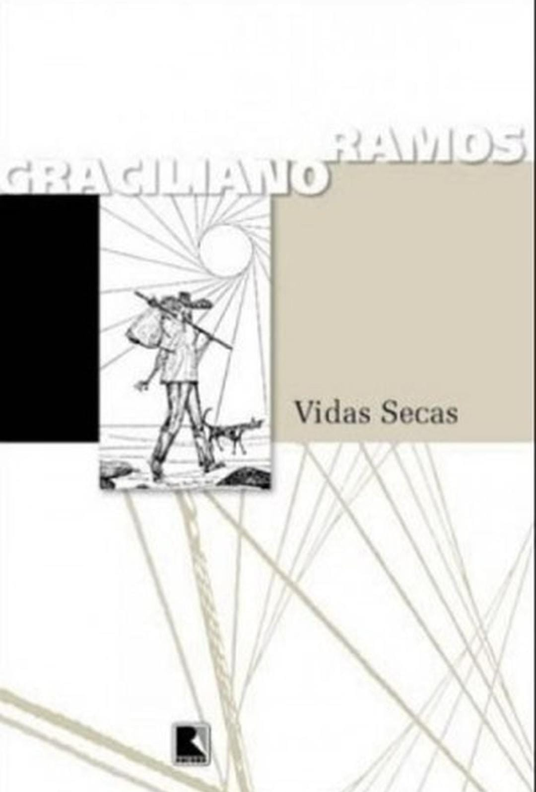
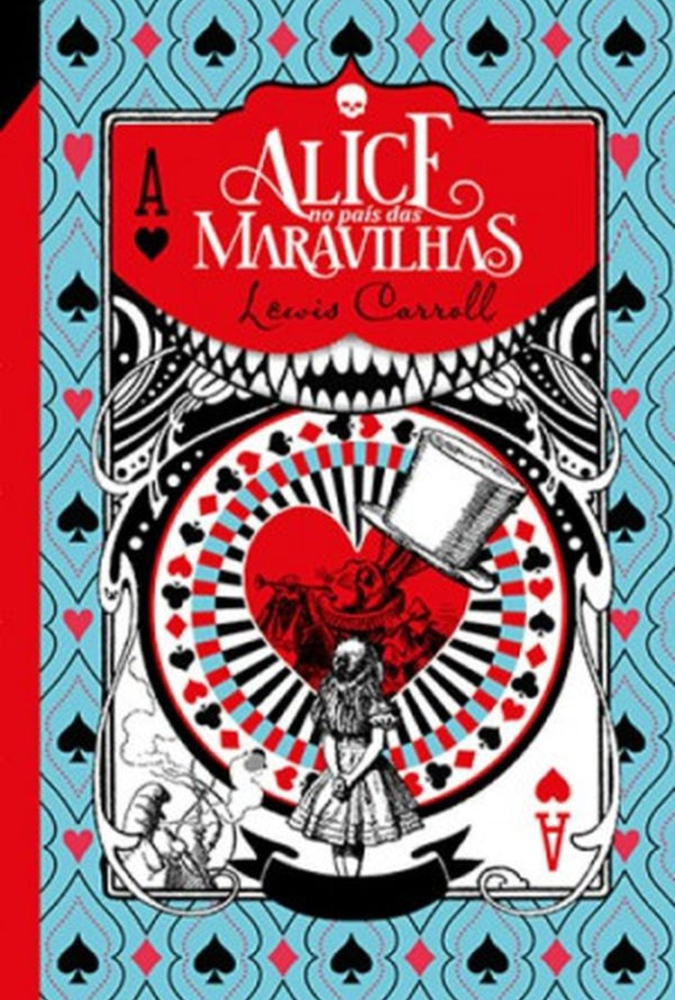
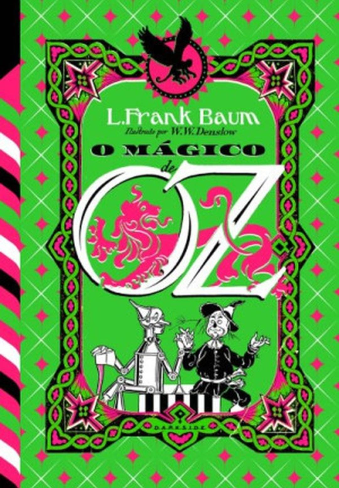

Meus Livros

Vidas Secas
O livro conta a história de uma família de retirantes nordestinos , Fabiano, Sinhá Vitória, os dois filhos e a cachorra Baleia, que luta para sobreviver à seca, à fome e às dificuldades da vida no sertão.

Alice no país das maravilhas
A história mostra Alice, uma menina curiosa, que cai numa toca de coelho e vai parar em um mundo mágico e estranho.

Mágico de Oz
A menina Dorothy é levada por um tornado para a terra mágica de Oz